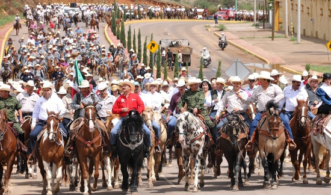

Hidalgo del Parral, Chihuahua
La Capital del Mundo
Jornadas Villistas
Surge en 1991 en honor a la memoria de Francisco Villa, cada año la muerte de Pancho Villa es escenificada en el mismo lugar donde aconteció. Se lleva a cabo una cabalgata de la ciudad de Chihuahua a Parral, exposiciones de artes plásticas, eventos de música clásica y folclórica, presentaciones editoriales, conferencias, conciertos, obras de teatro, la gran feria del pueblo y callejoneadas por el Centro Histórico de la ciudad, todo ello a cargo de artistas locales, nacionales y extranjeros.
Eventos destacados
Escenificación de la muerte de Pancho Villa
La mañana del 20 de julio de 1923, Villa estaba por cruzar uno de los puentes de la ciudad para llegar a una fiesta de bautizo. Lo que no sabía es que le tenían lista una emboscada. Más de 150 balazos lo mataron a él y a su fiel escolta. Cerca de ahí, en la Plaza Juárez, una bala perdida alcanzó el busto del Benemérito.
Concentracion Motociclista
Conciertos

Cabalgatas Villistas
